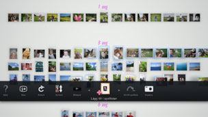

Skapa en spellista från valda fotografier
Du kan välja fotografier för att skapa en spellista. Med en spellista kan du titta på de utvalda fotografierna i samma ordning när som helst.
Skapa en spellista
1. |
Från [Biblioteksområdet], välj ett fotografi som du vill lägga till i spellistan, tryck på  |
||||||||||||
|---|---|---|---|---|---|---|---|---|---|---|---|---|---|
2. |
Använd vänsterspaken för att flytta till ett tomt fält i [Spellisteområdet] och tryck sedan på |
||||||||||||
3. |
Ställ in följande alternativ för spellistan.
|
 (Lägg till i spellistan).
(Lägg till i spellistan). -knappen.
-knappen.
 (Musik) i XMB™-skärmen.
(Musik) i XMB™-skärmen.Tips!
- Inställningarna för spellistan kan ändras senare under
 (Redigera).
(Redigera). - Varje spellista kan ha sina egna inställningar.
Lägga till fotografier till en spellista
1. |
Välj de fotografier som du vill lägga till i spellistan, tryck på |
|---|---|
2. |
Välj spellista och tryck sedan på |
Redigera inställningarna för en spellista
Du kan redigera inställningarna för en spellista. Välj den spellista som du vill redigera, tryck på  -knappen och välj därefter (Redigera).
-knappen och välj därefter (Redigera).
Flytta en spellista
Du kan flytta en spellista till en annan plats. Välj den spellista som du vill flytta, tryck på -knappen och välj därefter  (Flytta). Du kan flytta spellistan med vänsterspaken.
(Flytta). Du kan flytta spellistan med vänsterspaken.
Tips!
Du kan också flytta en spellista utan att behöva gå in i menyn. Välj spellistan och håll sedan  -knappen intryckt medan vänsterspaken används för att flytta spellistan.
-knappen intryckt medan vänsterspaken används för att flytta spellistan.
Ta bort en spellista
För att ta bort en spellista, välj den spellista som du vill ta bort, tryck på -knappen och välj därefter  (Radera).
(Radera).